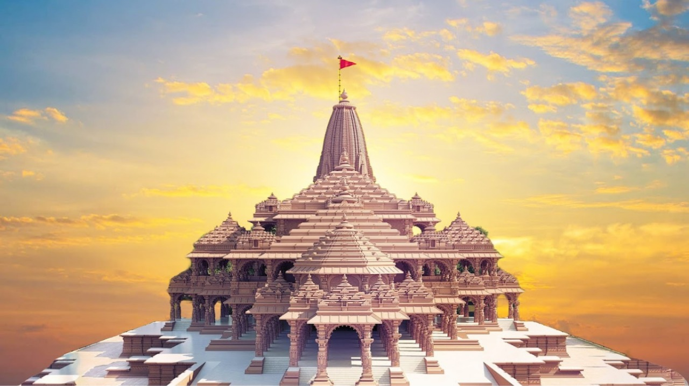
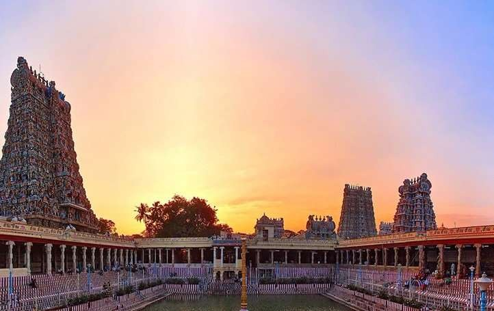

About

AYODHYA TEMPLE
Ayodhya located on the banks of the Sarayu River in Uttar Pradesh, is one of the most sacred cities in India and holds immense religious and historical importance. It is widely revered as the birthplace of Lord Rama, the seventh incarnation of Lord Vishnu, and serves as a central setting in the ancient Hindu epic Ramayana. Historically known as Saketa, Ayodhya was the capital of the ancient Kosala kingdom and is recognized as one of the seven most sacred cities (Sapta Puri) in Hinduism. The city is home to the grand Shri Ram Janmabhoomi Temple, recently constructed at the site believed to be Lord Rama’s birthplace, attracting millions of devotees and tourists from around the world. Besides the Ram Temple, Ayodhya also features other spiritual landmarks such as Hanuman Garhi, Kanak Bhavan, and numerous ghats along the Sarayu River where pilgrims perform holy rituals.
